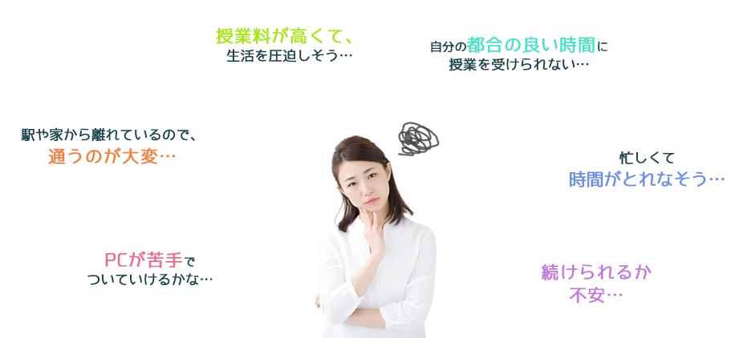
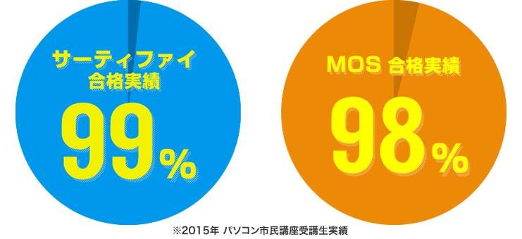
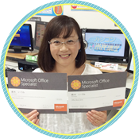
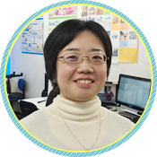
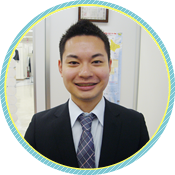
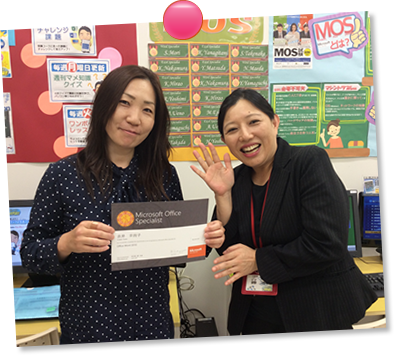
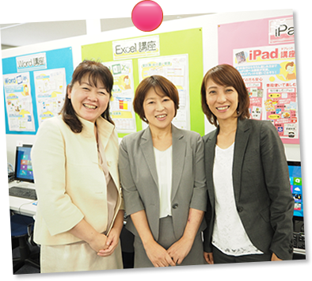

あなたの街の身近なパソコン教室で、資格取得＆PCスキルアップを!
資格対策 ビジネス実践講座

みんな初めは不安です
でも大丈夫！
| パソコン市民講座 つの安心 |
パソコン市民講座だからこそ！ 「必ずできる安心の理由」を ぜひ確かめてください！ |
プロの講師による映像教材
テキストの内容をプロの講師が詳しく指導！
テキストと映像を使ったオリジナルの学習教材でしっかり身につく！
講座の内容や操作に関する解説など、ポイントを分かりやすく解説してくれる映像教材で、確実にスキルアップへ繋げます！
個別の映像学習を見てみよう!
指導力のある先生によるサポート
教室での個別カウンセリングで不安を解決
あなたの学習をサポートするインストラクターが
教室で的確にアドバイス！
目標設定や最適なコース提案など、
あなたの目指す学習プランを一緒に考えていきましょう！
高い合格率で資格取得
一人では難しい資格取得も教室のサポートがあるから安心
教室での学習内容を自宅でも。
自宅学習でわからないことや学習のコツなどは、教室で直接インストラクターがアドバイス！

独自の会員システムを活用
会員専用サイトで自宅学習をさらに充実化！
パソコン市民講座の受講生だけが利用できる特別会員システムで
自宅学習をさらに充実したものに！
会員専用の学習サイトを使って、映像教材を自宅でも見れる！
豊富な学習コンテンツの提供に加えて、無料電話サポートも使い放題！
機器トラブルにも対応いたします。
毎月定額の月謝制
月々のお支払いは定額で安心
1時間あたり 1,500円(税抜)
受講期間の目安：２か月程度
受講回数：20回～
※受講されるコースやご自身のスキルなどにより、違いがあります。
受講コース
初心者でも安心。
どの資格を目指すかインストラクターと相談して、スキルや目的に合わせて、
資格取得までのプランをご提案します。
映像教材による個別学習スタイルでマイペース学習が可能。
わからないところはインストラクターに直接質問し、その場で解決。
サーティファイ ビジネス実践講座
サーティファイの資格検定試験は「実務性」の高さを大切にしています。
ビジネスの現場が求めるスキルを習得でき、現場で本当に役立つ力であることを証明してくれます。
「何が」「どれ位」出来るのか、ビジネスシーンでの実践力が身につきます。
こんな方には、
サーティファイ ビジネス実践講座の受講が最適！
- 実践力を身につけたい
- 仕事で実際に用いられる資料や図表を作成したい
- 使える機能を組み合わせて一連の成果物を完成させたい
MOS(マイクロソフトオフィススペシャリスト)資格取得講座
世界的に行われている国際資格で、認定されたスキルは世界で通用します。
ワードやエクセルなどのマイクロソフト オフィス製品の利用スキルを証明できる資格で、さまざまな機能を効率的に使いこなすスキルが身につきます。
こんな方には、
MOS資格取得講座の受講が最適！
- WordやExcelの基本的な操作や編集機能を理解したい
- 自分のパソコンスキルを目に見える形で証明したい
- 作業効率を向上させて業務の処理能力を上げたい
受験生の

「目標達成できました！」
受講生
鈴木さん・女性
再就職のために、WordとExcelのスキルアップとMOS資格取得を目指しました。今までは我流でもなんとか使いこなしていたWordとExcelでしたが、分からない事も多いので基礎からしっかり学ばせていただきました。分からない事はその場で先生に質問でき、毎回、楽しく落ちこぼれる事なく学ぶ事ができました。
MOS試験に向けてのアドバイスもしてくださり、自信を持って試験に臨む事ができました。そのお陰でWordもExcelも高得点で合格しました。
先生方には本当に感謝しています。これからも資格に恥じぬよう勉強していきたいと思っています。

「身につけたパソコンスキル
を活かして起業したい！」
イオン所沢教室
中嶋さん・女性
昔からパソコンやデジタルデバイスに対して苦手意識を持っていました。とにかくパソコンの画面を見続けることが苦痛でした。そんな私が2015年8月から市民講座に通いはじめて12月にExcel試験に合格して、3月にWord試験にチャレンジしようとしています。操作を覚えていくうちにパソコンへの苦手意識がなくなりいつの間にか楽しくなっていました。将来は身につけたパソコンスキルを活かして起業しようと思っています。

「PCスキルを磨き職場でバリ
バリ活躍したい」
イトーヨーカドー柏教室
市川さん・男性
私は仕事でPCを使いこなせるようにMOSの取得を目指して通っています。今はWordの勉強から始めていますが、同時にタッチタイピングの練習もしています。教室に通う前は自己流のタイピングをしていまいたが、今は１から正しいタイピングを学べているので嬉しいです。自分で練習した後、先生にタイピングをチェックしていただけるのには驚きました。PCスキルを磨き、職場でバリバリ活躍していきたいと考えています。
「基本的なスキルを身に付け
たい」
イトーヨーカドー津田沼教室
三瓶さん・女性
事務の仕事をはじめるにあたって基本的なスキルを身に付けたいと思い、インターネットでパソコン教室を検索しました。他のパソコン教室と比較して、料金体系が明確だったことと、映像での授業もしっかり機能説明がされていて、聞き逃したところの巻き戻しや、自宅での復習もできるところが自分の求める授業スタイルにあっていると思い、体験後入会を決めました。今はビジネス講座で身に付けたスキルでWord2級、Excel2級、PowerPoint上級とすべての資格取得を目標に頑張っています。
- 
- 
教室見学・無料体験の流れ
お問い合わせ・ご予約
専用の予約フォームより教室見学・無料体験をご予約ください。ご不安な点などご質問も受付けております。
スキル診断
実際に授業を受ける教室で、まずはあなたのスキルを診断！
教室の雰囲気や授業のイメージを実際に見ていただけます。
コースカウンセリング
あなたの目的、取りたい資格、身につけたいスキル、授業を受けるペースなど、教室に通ってどのように学習したいのかをヒアリングし、あなたのイメージを共有します。
コースご提案
スキル診断の結果とコースカウンセリングを参考に、具体的な授業の進め方や資格取得に向けた学習プランなど、あなたのイメージを具体的にご提案いたします。